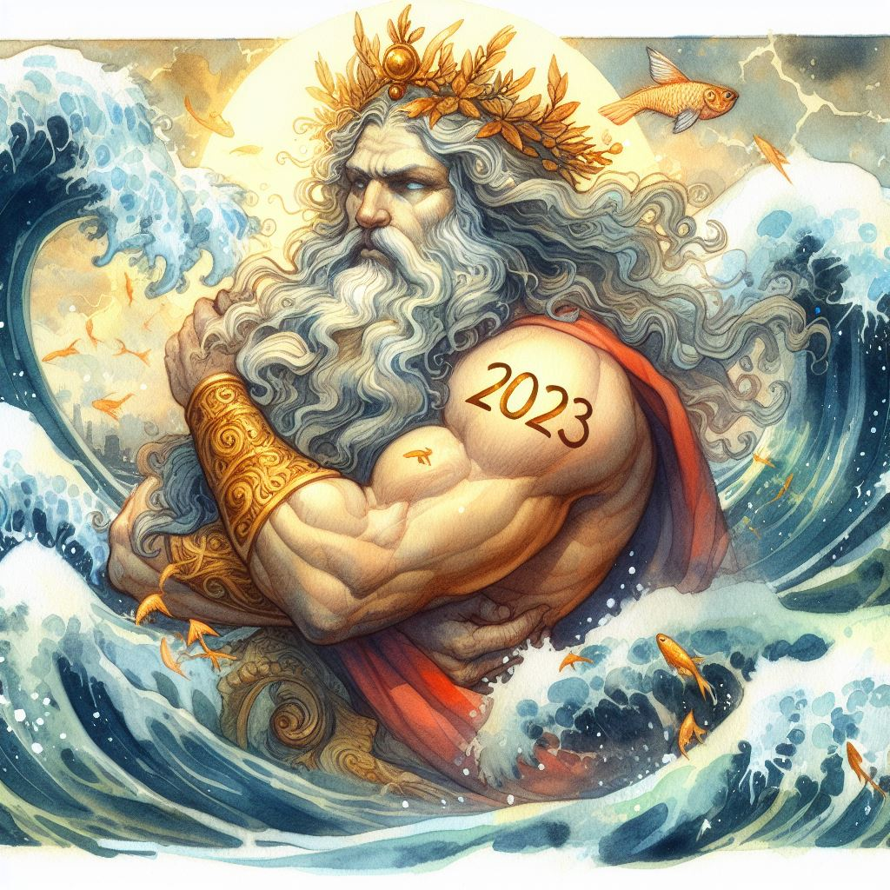

2023 ♥ Poseidon
It’s late December and the time of the year when work slows down in my part of the world. For many of us an opportunity to take a break and to look back, contemplating the achievements of the year. I decided to do so as well and write a bit about Poseidon.

What follows is a subjective account of the events in and around the framework in 2023 - each of my colleagues in the core team (Stephan Schiffels, Ayshin Ghalichi, Thiseas C. Lamnidis, Dhananjaya B. A. Mudiyanselage, Wolfgang Haak and I, Clemens Schmid) would probably emphasise different developments in such a write-up. That is in itself an achievement, because it shows how much the tech-stack, domains and services in our little ecosystem have grown this year: beyond the understanding of each of us individually.
The Poseidon schema
Let’s start simple with the two new releases of the Poseidon schema we published this year: v2.7.0 and v2.7.1. They were published in short succession in March and May, the latter only slightly improving the sequencing source files (.ssf) added in the first. See the changelog here for more details, but the addition of the .ssf file is indeed their most remarkable contribution to the schema. With it we addressed a major desideratum and unresolved question in previous versions of Poseidon: How should genotype data be linked to the raw sequencing data on the European Nucleotide Archive (ENA) and other archives of the International Nucleotide Sequence Database Collaboration (INSDC)?
The .ssf file is, I would argue, a smart solution for this question. It specifies the same variables already used in the ENA database, allows for an extremely flexible, yet not arbitrary n:m connection between the entities in a Poseidon package and the raw data products and it can be generated semi-automatically for most of the data in our public archives. With some tweaking it can also be used to organize local data repositories independent of any online databases. The .ssf file is finally the very foundation on top of which the amazing Minotaur workflow is built (see below).
Generally, both the fact that only two Poseidon releases were necessary this year and that we could treat them as non-breaking changes indicate that we reached a certain level of maturity and stability in the schema. Of course we still have ideas how to extend it further in the future, but at the moment I’m optimistic that we can maintain long-term backwards compatibility. The process in which we discussed, specified and later improved the .ssf file definition to then see Minotaur be erected on top of it was a very satisfying professional experience for me personally.
The Minotaur workflow
The Minotaur workflow is a semi-automatic workflow to reproducibly process published sequencing data into Poseidon packages. Developing this entirely new branch of the Poseidon ecosystem became possible because Thiseas joined the Poseidon core team in 2023. He came up with a sophisticated, yet open and transparent implementation of this process, in which authors and the community as a whole retain control over the data and the data processing parameters. A full write-up for the website is in progress. Here is the summary Thiseas prepared for our poster at the ISBA conference:
Community members can request new packages to be processed through the Minotaur workflow by submitting a build recipe as a pull request against a dedicated GitHub repository. This recipe is created from a sequencing source file (.ssf), describing the sequencing data for the package and where it can be downloaded. Using the recipe, the sequencing data gets processed via nf-core/eager on computational infrastructure of MPI-EVA, using a standardised, yet flexible, set of parameters. The generated genotypes, together with descriptive statistics of the sequencing data (Endogenous, Damage, Nr_SNPs, Contamination), are compiled into a Poseidon package, and made available to users in the minotaur-archive.
The Minotaur workflow is a timely addition to the Poseidon framework, providing a flexible solution to wrap legacy and new data in uniformly processed packages. Homogeneous data processing puts us closer to our great comparadum, the AADR dataset. It also helped us to finalize the structure of our public archives, which emerged from long discussions about the kind of data we think the aDNA community requires for derived analyses.
Right now the Minotaur workflow is still in a final development and testing phase, where we focus on the processes around it, so the submission of recipes, their review and the forwarding of results to the minotaur-archive. One particular tricky question is how context information in the .janno file should be passed from the community-archive to the new packages in the minotaur-archive. One of the last pull requests for our software tool trident in 2023 aims to introduce a reliable mechanism to merge .janno files to address this issue.
The public archives
In 2023 we finally came to a conclusion on how to organize our public data archives. What emerged is a threefold division into what we call the community-archive, the minotaur-archive and the aadr-archive. The archives are described in more detail on the website, but here’s the gist of it:
The community-archive emerged from our old public-archive. It includes the legacy data we originally copied from the AADR. We now decided to use this archive for author-submitted publication-wise packages to collect the exact genotype data analysed in the respective papers. The idea is twofold: With the author-submitted genotype data the results in a given paper can be reproduced exactly. And the publication authors are generally the most trustworthy authority for the context data we collect in the .janno files, e.g. the spatiotemporal origin of the individual samples. Ayshin and I recently wrote about the submission process for the community-archive here.
The minotaur-archive mirrors the community-archive in that it features publication-wise packages, usually even the very same as in the community-archive. To distinguish them clearly, package titles and sample-wise Poseidon_IDs in the minotaur-archive carry the suffix _MNT. As explained above the packages in this archive include consistently reprocessed genotype data, run through the Minotaur workflow.
The aadr-archive is the conceptionally most simple archive. It features “poseidonized” versions of releases of the AADR dataset, currently only the latest AADR v54.1.p1. We documented the code and decisions for the cleaning and packaging process here.
2023 not only saw the planning and setup of these three archives, but also a lot of work to fill them with life. For the community archive that meant plenty of data cleaning by all of us, most notably Dhananjaya. And it also meant providing guidance for authors to submit their data. Thanks to the hard work of Ayshin a total of eleven author-submitted packages are available in the archive now. Number twelve was submitted shortly before christmas and is awaiting review. The minotaur-archive is still functionally empty, but three packages are pending thanks to Thiseas and will hopefully soon be merged. Preparing the latest version of the AADR dataset for the aadr-archive was one of the projects I tackled this year.
The software tools
The Poseidon software tools grew significantly more powerful this year. From a user-perspective 2023 brought various new features, changes to the command line interfaces and breaking updates in the Web-API. To keep track of the releases and the Poseidon schema versions they support I created a version overview table on the website.
With qjanno I added an entirely new tool to the set. It is a command line tool to run SQL queries on .janno (and arbitrary .csv and .tsv) files. I created it by forking the qsh package and then adjusting it heavily for the use on Poseidon packages. Just as trident it is written in Haskell and openly available with precompiled executables here.
Stephan invested a good amount of effort into consolidating the data analysis features in xerxes. He wrote a whitepaper to explain and justify the reasoning behind the implemented logic for f-statistics, and another blog post on how to run it. Even more approachable and comprehensive is a write-up he shared here. Together we worked on integrating the many changes to trident and its underlying poseidon-hs Haskell library into xerxes.
Our main workhorse, trident, saw an astonishing number of new releases: v1.1.6.0 on January 8 to v1.4.0.3 on October 30. I quickly went through the extended changelogs published with each release to summarize the user-facing highlights of what trident supports now:
- Arbitrary columns in the .janno file beyond the columns specified in the Poseidon schema (v1.1.6.0)
- Specification of individuals with identical names from different source packages in the
trident forgeselection language (v1.1.7.0) - Validation of the entire genotype data in a package with
--fullGenointrident validate(v1.1.10.2) - Poseidon schema version v2.7.1 with validation of the .ssf file (v1.1.12.0)
- A highly improved Poseidon Web-API that allows to request individual (old) package versions (v1.2.0.0)
- Reworked versions of
trident update, now calledtrident rectify, andtrident validate, which now allows to validate not just entire packages, but also individual files (v1.3.0.4) - Selecting packages by version in the forge selection language and generally handling multiple package versions (v1.4.0.2, Stephan shared yet another blog post about this release)
As always I enjoyed the work on the software tools tremendously, especially in two cases: If one of our users reports an issue and we can address a concrete need with a release, and if the Haskell programming language allows for a particularly elegant solution for a given problem. A currently pending pull request combines both: Ayshin made me aware of some validation failure cases that require better error messages and I found a neat way to provide just that with a custom-tailored monadic stack.
Outreach
The last domain where we made good progress in 2023 is public outreach. Naturally we invested hours in writing and updating documentation on the project website (https://www.poseidon-adna.org), but we also pursued a number of special projects beyond the basic, technical description of software and workflows.
The first one of these was possible thanks to the effort of Dhananjaya, Stephan and me: We built a page on the website where the data in the public archives can be easily explored. It makes use of our Web-API to access the data and display it with a sub-page for each package. Dhananjaya wrote a blog post about this, recently.
I already mentioned this blog multiple times above. It is indeed another great addition of 2023. Stephan created a separate website at https://blog.poseidon-adna.org to share news and short tutorials. Our wish has always been to gather an active and engaged community of users around Poseidon, and we hope to establish this blog as one of its central communication hubs. A major medium for longer write-ups beyond the technical documentation already available on the website.
To announce our blog posts, software releases and other news we fully switched from Twitter (now X) to the Fediverse in 2023. You can follow us here: https://ecoevo.social/@poseidon. The switch came naturally, given the state of affairs at X. Submitting posts automatically is more easy with Mastodon compared to Twitter and I made sure that this process works reliably for our software releases on GitHub.
Beyond these technical novelties and online communication we also presented Poseidon at two in-person conferences in 2023: ISBA10 in Tartu, Estonia and the NFDI4Objects community meeting in Berlin, Germany. The poster we presented at both of these occasions was already mentioned above and is available here. And the slides for the talk Thiseas prepared for the latter should soon be made available by the NFDI4Objects team.
Conclusion
Much has happened for Poseidon in 2023 and I’m sure I’m not doing all of it due justice in this little summary. But I consider what is here already an impressive list that stands witness for the effort we put into the framework. And it seems to pay off: The user base is growing. More users help us in turn to find and address remaining issues and make Poseidon better for all of us. This will once more be one of my main aspirations in the coming year 2024.